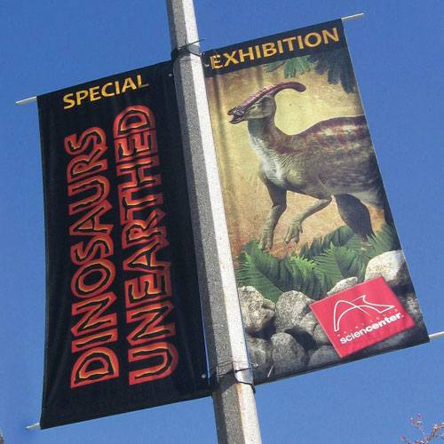
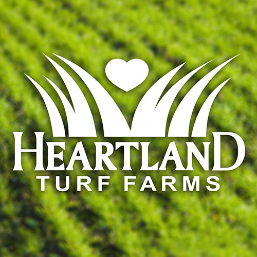
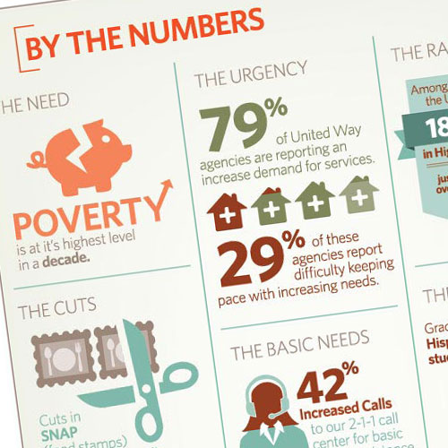
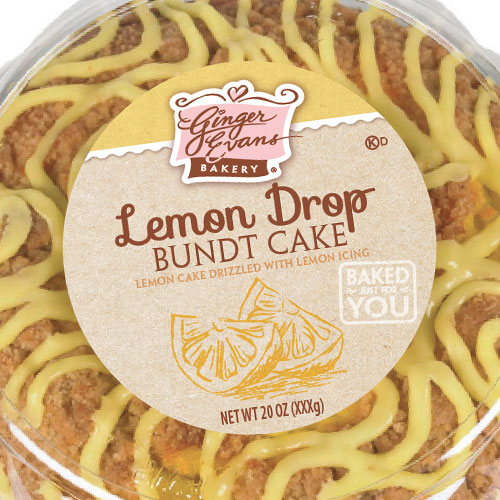
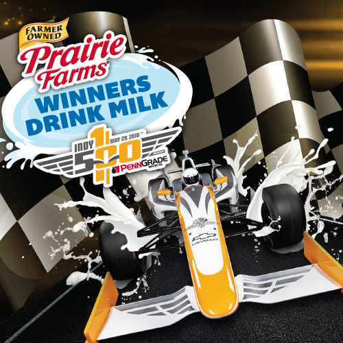
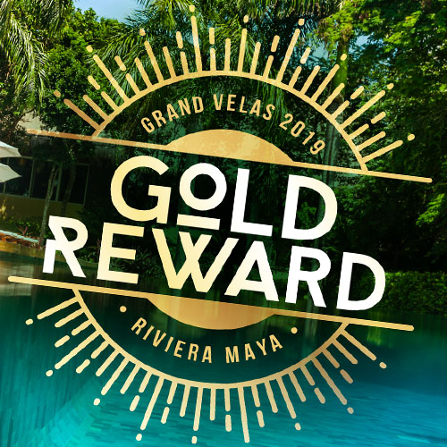

|  |
St. Louis Science CenterABOUT: The Saint Louis Science Center, founded as a planetarium in 1963, is a collection of buildings including a science museum and planetarium in St. Louis, Missouri, on the southeastern corner of Forest Park. |
|  |
Action GraphicsABOUT: Graphic and Sign shop working with local businesses in Waterloo and Columbia, Illinois. |
|  |
United Way of Greater St. LouisABOUT: United Way Worldwide is the leadership and support organization for the network of nearly 1,800 community-based United Ways in 45 countries and territories. |
|  |
Save-A-LotABOUT: Save-A-Lot is an American discount supermarket chain headquartered in Earth City, Missouri, near St. Louis, Missouri, United States. |
|  |
Prairie Farms DairyABOUT: Prairie Farms Dairy is a dairy cooperative operating out of Carlinville, Illinois. As a dairy cooperative, Prairie Farms receives milk from producers and converts it into many different products. |
|  |
MaritzABOUT: Maritz is a sales and marketing services company that designs and operates employee recognition and reward programs, sales channel incentive programs, and customer loyalty programs. |